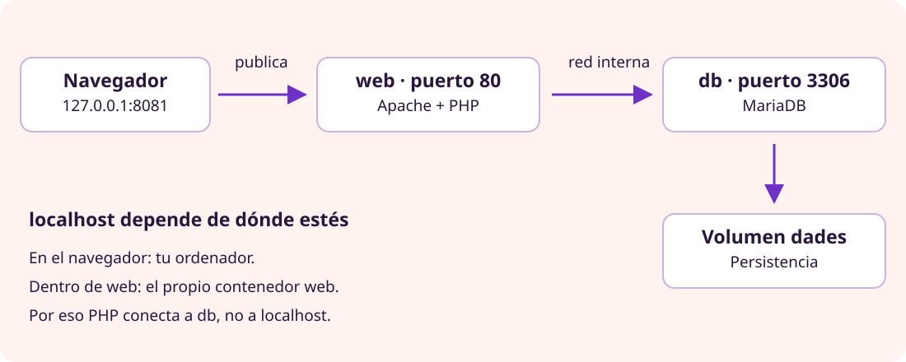

Fundamentos · Despliegue reproducible
Contenedores

Comprende imágenes, procesos, puertos y datos antes de reproducir el entorno.
1. El problema
El mismo código necesita versiones compatibles de PHP, extensiones y configuración. Un contenedor ejecuta un proceso con un entorno de archivos y dependencias definido por una imagen, reduciendo diferencias entre instalaciones.
2. Conceptos esenciales
| Concepto | Significado | Ejemplo |
|---|---|---|
| Imagen | Plantilla de solo lectura, formada por capas; no está en ejecución. | php:8.3-apache |
| Contenedor | Instancia ejecutable de una imagen, con configuración y capa de escritura propias. | Servicio web. |
| Volumen | Almacenamiento con ciclo de vida independiente del contenedor. | Archivos de MariaDB. |
| Registro | Servicio que distribuye imágenes. | Docker Hub. |
Una imagen puede originar varios contenedores. Detener un contenedor no lo elimina. Eliminarlo borra su capa de escritura, pero los datos de un volumen pueden conservarse.
3. Contenedor y máquina virtual
VM: hardware → hipervisor → sistema invitado con kernel → procesos Contenedores Linux: kernel Linux del entorno anfitrión → procesos aislados
Los contenedores Linux comparten el kernel del entorno Linux que los ejecuta; no arrancan cada uno un sistema completo. En macOS y Windows, Docker Desktop suele usar una VM Linux: comparten su kernel, no el de macOS. También debe ser compatible la arquitectura CPU.
El aislamiento no es invulnerable: los permisos excesivos y los montajes de carpetas pueden permitir acceder a recursos externos.
4. Nuestra plataforma
Navegador → 127.0.0.1:8081 del ordenador
↓ publicación de puerto
web:80 · Apache y PHP
↓ red interna, db:3306
db · MariaDB
↓
volumen dades
127.0.0.1:8081:80 publica el puerto 80 del contenedor en el 8081 de loopback del ordenador. Apache sigue escuchando en el 80 dentro del contenedor.
Dentro de web, localhost apunta a web. PHP debe conectar a db, nombre del servicio que resuelve la red interna de Compose. El navegador no utiliza ese nombre interno.
5. Dockerfile, Compose y .env
Dockerfile: receta para construir la imagen web. Parte de PHP con Apache, habilita pdo_mysql y copia el código. Si cambia el código copiado, hay que reconstruir.
Compose: define servicios, imágenes o construcción, variables, puertos, red y volúmenes. .env: proporciona valores que Compose sustituye donde se referencian; no se convierten automáticamente en variables de todos los contenedores. Aquí las pasamos explícitamente mediante environment.
6. Secuencia de arranque
- Construir o descargar imágenes.
- Crear red, volumen y contenedores.
- MariaDB inicializa la base si el volumen es nuevo.
- El healthcheck espera que MariaDB esté preparada.
- Apache recibe una petición y ejecuta PHP.
- PHP consulta db y devuelve HTML.
El orden de arranque no garantiza disponibilidad. El healthcheck ayuda, pero no demuestra que el esquema de tablas sea correcto: hay que hacer pruebas funcionales.
7. Comandos
| Comando | Efecto |
|---|---|
| docker compose config --quiet | Valida sin imprimir secretos. |
| docker compose up --build -d | Construye y arranca en segundo plano. |
| docker compose ps | Muestra estados y puertos. |
| docker compose logs web | Muestra la salida del servicio web. |
| docker compose down | Elimina contenedores y red, conserva el volumen con nombre. |
| docker compose down -v | También elimina el volumen: destruye los datos. |
8. Experimentos
- Cambia un resultado, ejecuta down y up: se conserva gracias al volumen.
- Detén db: observa el error controlado y los logs; vuelve a arrancarla.
- Cambia CSS y reconstruye web: COPY no sincroniza cambios automáticamente.
9. Errores frecuentes
- Imagen no significa aplicación en ejecución.
- Persistencia no significa copia de seguridad.
- Los scripts SQL iniciales solo se ejecutan con un volumen nuevo.
- db es un nombre interno, no una URL para el navegador.
- La portabilidad depende también de arquitectura y configuración externa.
Referencias oficiales
Llévalo al proyecto

Aplicación al proyecto
Preparación y despliegue
Este laboratorio requiere Docker con Compose disponible y el esquema SQL implementado. Puedes completar primero su lectura conceptual y volver a los comandos cuando tengas los requisitos.
- Lee el modelo de datos y escribe los SQL.
- Desde la copia local de
proyecto/05-contenidors/, copia .env.example como .env y cambia ambas contraseñas. - Coloca tus SQL en
sql/01-esquema.sqlysql/02-dades.sql. No incluyas CREATE DATABASE ni CREATE USER: la imagen los prepara. - Comprueba y arranca:
docker compose version
docker compose config --quiet
docker compose up --build -d
docker compose ps
docker compose logs webVisita http://127.0.0.1:8081/. Sigue las condiciones y advertencias del README del laboratorio. El formulario de resultados es solo local y no tiene autenticación.
Objetivo comprobable: explicas cada flecha del diagrama y verificas que un resultado persiste después de down/up. Conservar datos no equivale a disponer de un backup.
Ampliación opcional
Comprueba una hipótesis
Elige un experimento de la teoría: detener db, reconstruir CSS o recrear contenedores conservando el volumen. Predice el resultado, pruébalo y explica qué mecanismo lo causa. No borres volúmenes para comprobar persistencia.